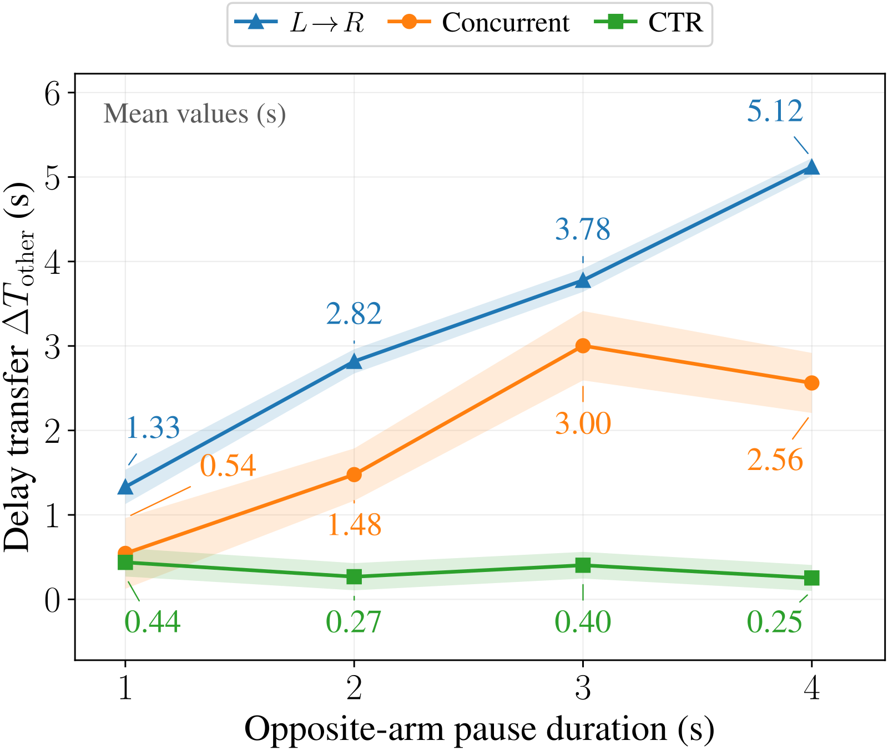
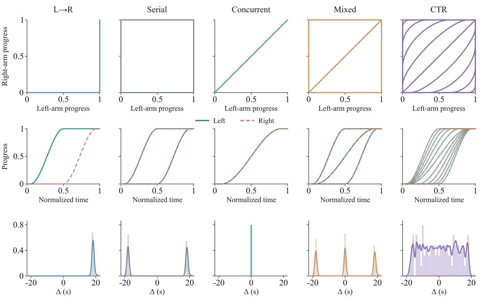
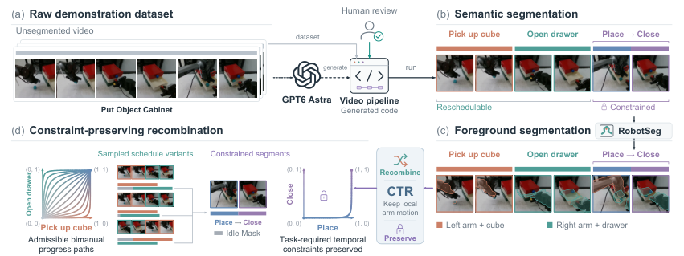
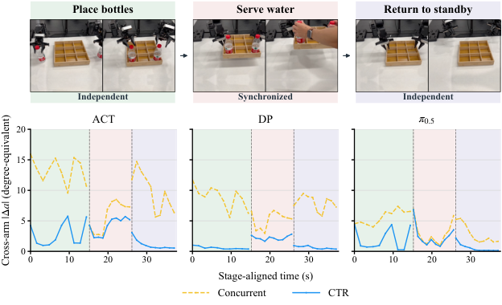
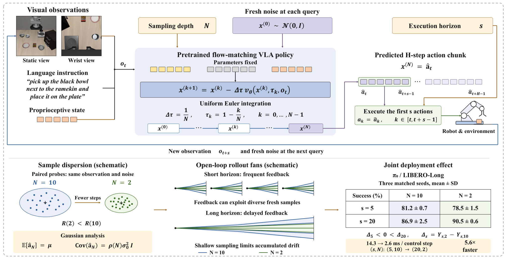

Contents · 6 sections
1A variable hidden in demonstrations that the model cannot separate2Policies at the same 92% collapse from a different progress starting point3Only the timing moves, and segment content stays intact4Does the dependence survive where coordination is required?5Can it still act correctly on progress combinations it has never seen?6The approach is a bet on getting the constraints rightSHARE
This paper attributes the needless waiting between the arms of a bimanual policy to demonstrations that cover too narrow a range of timing, and its fix changes only the timing, leaving the model and the number of demonstrations untouched.
Sort Letters is a real-robot task in which the two arms' subtasks do not depend on each other. Train π0.5 on data that only ever shows "left first, then right", pause one arm for 4 s at run time, and the other arm's completion time grows by 5.12 s on average, longer than the pause itself. With data that only shows "both arms start together", it still grows by 2.56 s.
Train on data processed by CTR, and the same pause transfers only 0.25 s. CTR stands for Constraint-preserving Temporal Recombination, a data transformation applied before training: it re-staggers the recorded segments of the two arms in time, within the range the task constraints allow.

Getting the two arms to ignore each other is not enough. In the real-robot Put Object Cabinet task, the researchers close the drawer just before the left arm inserts the object, and the correct behavior is to wait until the drawer reopens. The CTR-trained policy waited every time, while the baseline that had only seen left-then-right violated the constraint in 98% of trials. So the paper has to answer a two-sided question: don't wait in unrelated phases, and do wait where coordination is required.
A variable hidden in demonstrations that the model cannot separate
If each arm picks up an object and the demonstrator goes left then right, that order is merely a choice. A drawer must be open before an object is inserted, which is a task requirement, but it need not be open before the object is grasped. Imitation learning sees only the recorded timeline, and in the data these two kinds of ordering look identical.
Suppose every demonstration goes left then right. Until the left arm finishes, the right arm's progress is always 0. A policy that reads the right arm's progress and one that ignores it entirely can output the same actions on every state seen, and they diverge only on progress combinations never seen.
The authors call the first case spurious cross-arm coupling: the opposite arm's progress is used as a shortcut cue, even when the arms' relative timing does not matter at that moment. More demonstrations under the same schedule cannot tell the two apart, because the new data still falls on the same path.
This narrow coverage is common in public data. The authors audited four bimanual datasets, RoboTwin 2.0, RoboCOIN, DexMimicGen, and BiCoord, and found that 266 of 716 tasks (37.2%) could be rescheduled. Among those 266 tasks, only 3.4% show more than one admissible schedule in the data.
Policies at the same 92% collapse from a different progress starting point
If the shortcut really exists, pairing a familiar single-arm state with a different admissible opposite-arm progress could make the policy fail. On Sort Letters, the authors tested π0.5 from six task-defined initial states, including the nominal start C00, matched progress, left-leading, and right-leading, with 50 runs per state.
The training data comes in five timing schedules, and the figure below shows the progress paths each one covers.

| Training distribution | Relative timing of the arms | C00 success rate | Worst success rate across six states |
|---|---|---|---|
| L→R | Left then right only | 90% | 36% |
| Serial | Both serial orders | 92% | 0% |
| Concurrent | Simultaneous start | 92% | 28% |
| Mixed | Both serial orders plus simultaneous start | 74% | 56% |
| CTR | Sampled across the admissible range | 94% | 76% |
The first three rows have nearly the same C00 success rate but very different worst states, so evaluating only from the nominal start hides the problem. Mixed combines three canonical schedules and lifts the worst state to 56%. CTR lifts it further to 76%, with the right-leading state going from Mixed's 56% to 96%, while the matched-progress state is 94% for both.
Simulated Put Object Cabinet shows a more extreme version: Concurrent reaches 98% with matched progress and 0% at all four asymmetric states. On this task, however, CTR's worst-state gain over Mixed is only 48% to 56%, a much smaller margin.
Only the timing moves, and segment content stays intact
Since what is missing is coverage of schedules, the most direct remedy would be to recollect under other schedules, but recollecting may change the single-arm trajectories too. CTR keeps each segment's content and duration as recorded and changes only its start time, so the schedule is the only thing that varies.
Take the drawer task: the left arm grasping the cube and the right arm opening the drawer can be staggered freely, while the "insert, then close the drawer" segment is constrained. Judging which staggerings are safe requires task knowledge beyond the observed timing, which CTR supplies as task-constraint annotations during data construction. At task setup, GPT-6 Astra generates a task-specific video-processing program, and this program detects interactions from visual and robot signals, cuts each arm's stream into ordered segments, and outputs the task-required cross-arm relations. The model itself does not annotate individual videos. The authors say these relations only approximate the true constraints, and the deployed policy does not see these annotations either.

The retiming rules are conservative. Each arm's internal order stays fixed, and constrained segment pairs keep their recorded relative offsets, even when some timing variations there would actually be feasible. The remaining reschedulable blocks have offsets sampled uniformly within the admissible range and can become serial or overlapping. These constraints are used only when building the data, and the deployed policy does not see them.
Real data adds two more things to handle. The main camera films both arms at once, so the image must be rebuilt once segments are staggered: CTR uses foreground segmentation to cut out the two arms and relevant objects and composites them onto the background at the retimed times. Retiming also inserts artificial waits for an arm, so IdleMask zeroes the imitation loss for those waits, while task-required holding, support, and terminal holding stay supervised. Hoot says

- constrained segment pair: relative offset frozen
In columns t3 and t4 the working left arm is still trained, and only the right arm's two rows are masked. The right arm is also still at t6 and t7, but that holding was in the recording, so it stays supervised.
- actions that should be supervised but are lost
This grid is the misreading, and the paper does what the other grid shows. Dropping a frame whenever one arm waits also removes supervision for the other arm's valid actions.
- action from a recorded segment: counted
- required or terminal holding: counted
- artificial wait: loss zeroed
- Count the cells (illustrative): 4 coordinates × 10 timesteps = 40 cells. Each arm has 3 artificial-wait steps and 2 coordinates, so 3×2×2=12 cells are zeroed and the other 28 are counted, and the loss denominator also counts only those 28.
- Dropping whole frames: in each of the first 5 steps one arm is waiting, so 5×4=20 cells go, 8 more than should be masked, and those 8 are exactly the cube grasp and the drawer opening.
- Masking everything that is still: the two arms have 6 holding steps in total, so 6×2=12 more cells lose supervision, and 2×2=4 of them record the right arm staying still while the left arm places the object.
Illustrative: one retimed drawer-task timeline with 10 timesteps and only 2 action coordinates drawn per arm; the segments and step counts are illustrative. While an arm waits, its state, wrist image, main-view foreground, and action label are all read at one frozen recorded moment, so it holds a recorded pose. This timeline is only one sample from the admissible set Ω(τ): it must satisfy the constraint annotations and then pass geometric, contact, and observation-consistency checks, or it is rejected. The required-versus-reschedulable logic lives in the program GPT-6 Astra generates from the task description, and neither is queried at deployment. Source: paper §4.2–§4.3; Appendix F algorithm (program generated from task description ξ); F.3 Eq. 16 (during waits the source-time map stays at the first segment's start or the previous segment's end); F.5 Eqs. 18–19 (mask indexed by batch element, prediction step, arm, and action coordinate; the denominator counts only unmasked terms); Appendix G (waits hold a recorded pose; geometric, contact, and observation-consistency checks). The timeline, coordinate count, and cell counts are illustrative
Could these two engineering pieces be the real source of the gains? The authors ran a control for each.
Adding visual synthesis to L→R without retiming moves Sort Letters from 90% to 90% and Scan Object from 68% to 62%, so visual synthesis alone does not explain the gains. Removing IdleMask from CTR takes the two tasks from 94% to 92% and from 70% to 56%, a clear drop on Scan Object. My reading is that supervising artificial waits as usual amounts to teaching the policy to idle; this is an intuitive interpretation of these numbers, and the paper's control only shows that IdleMask contributes.
Does the dependence survive where coordination is required?
The most worrying side effect of scattering schedules is washing out the coordination that is actually needed. The authors probe this on Deliver Water, whose Place Bottles and Return to Standby phases are independent, with a Serve Water phase between them that requires synchronization. The probe fixes one arm's state and observations, changes only the opposite arm, and measures how much this arm's predicted action changes.

Take ACT (Action Chunking with Transformers, an imitation-learning policy that predicts chunks of actions) as an example. The model trained on Concurrent data has a sensitivity of 5.82 in the synchronized phase, below the 13.28 and 9.77 of the two independent phases, which means it is least sensitive exactly when it most needs to watch the other arm.
With CTR data, the two independent phases drop to 2.79 and 1.07, and the synchronized phase is 4.19. The synchronized phase's absolute value also falls, but it remains above the model's own two independent phases, which means the sensitivity pattern now matches the task structure.
The behavioral evidence comes from constraint interventions on two real-robot tasks, both using π0.5. As noted at the start, on the drawer task CTR violates the constraint in 0% of trials and L→R in 98%. Organize Hardware defines a shared workspace, where one arm entering while the other occupies it counts as a violation: CTR is at 4% and Concurrent at 36%.
The two tasks use different comparison groups here, so they cannot be read as one "baseline". The cost is in the results too: after the condition clears, the policy's delay in resuming action goes from 0.01 s to 0.27 s and from 0.09 s to 0.15 s.
Can it still act correctly on progress combinations it has never seen?
CTR's training distribution is already broad, and the pause experiment at the start may still be visiting progress states it has seen, so a good result there does not count as generalization. The authors therefore carved a progress region out of Sort Letters: one arm at 20% to 30% and the other at 70% to 80%. Each arm's own progress has been seen, and only this combination has not.
CTR-hole deletes this region from its training data, and Mixed's data does not contain the region to begin with, so neither has seen this combination. Starting from states inside the region, CTR-hole succeeds 74% of the time, Mixed 58%, and CTR-full, which keeps full coverage, 76%.
Carving out the region costs only 2 percentage points, a result that supports CTR's benefit extending to unseen progress combinations. The evidence so far is this one task and one region.
The conclusion under default conditions should be read more narrowly. Across eight tasks and three model families, CTR has a higher success rate than Serial in 19 of 24 comparisons, and Place Dual Shoes shows no improvement. The comparison is against Serial, not the stronger Mixed.
DP (Diffusion Policy) and ACT have very low absolute success rates on many tasks, for example on Organize Hardware DP goes from 0% to 2% and ACT is 0% on both sides, and because each cell has only 50 runs, such differences mean little. The changes on π0.5 carry more weight: simulated Put Object Cabinet goes from 36% to 66%, and Deliver Water from 78% to 92%.
The approach is a bet on getting the constraints right
CTR needs no model change and no new demonstrations. What it needs is task knowledge, and all of that knowledge sits in the task-specific processing program. Errors in interaction detection, segment boundaries, or relation logic can all produce invalid recombined data. The composited image only approximates a real concurrent scene, so contact-sensitive and coupled segments stay protected and are not retimed.
The authors' interventions and diagnostics also cover only specific forms of cross-arm dependence. What the paper can support therefore has a defined scope: on tasks where the constraints are correctly annotated and independent phases really exist, spreading out the schedules can weaken the shortcut through opposite-arm progress while preserving the few places where the arms must watch each other.
How did this read for you?
Hoot made a note. Thanks for the feedback.
One tap, no sign-in; tap again to undo. Only anonymous counts are kept, never who you are.
Related papersMore from Paper Daily
 Embodied · 2026-11-03Contact Imitation Interface: Transferring Dexterous Skills by Showing How Contact UnfoldsTeaching a robot hand from human demonstrations is hard because human and robot hands have different shapes. If the conversion only tries to make the robot hand look like the human hand, the robot's fingertips often touch the object in different places than the human did, and grasps and pushes fail. CIMI puts contact first. During demonstrations it records the contact surfaces between fingers and…
Embodied · 2026-11-03Contact Imitation Interface: Transferring Dexterous Skills by Showing How Contact UnfoldsTeaching a robot hand from human demonstrations is hard because human and robot hands have different shapes. If the conversion only tries to make the robot hand look like the human hand, the robot's fingertips often touch the object in different places than the human did, and grasps and pushes fail. CIMI puts contact first. During demonstrations it records the contact surfaces between fingers and… Embodied · 2026-11-02UMI-Live for In-The-Wild Bimanual Robotics Data CollectionMost of the training data came from handheld grippers, collected at a different place and under different lighting than the test scene, with only a small share of real-robot teleoperation. Fine-tuned on this mix, pi0.5 succeeded in all 10 trials of a bimanual task that puts oranges into a bowl. The demonstrations come from UMI-Live, an open-source bimanual handheld data-collection system released…
Embodied · 2026-11-02UMI-Live for In-The-Wild Bimanual Robotics Data CollectionMost of the training data came from handheld grippers, collected at a different place and under different lighting than the test scene, with only a small share of real-robot teleoperation. Fine-tuned on this mix, pi0.5 succeeded in all 10 trials of a bimanual task that puts oranges into a bowl. The demonstrations come from UMI-Live, an open-source bimanual handheld data-collection system released…
Embodied · 2026-10-27Coupling Execution Horizon and Sampling Depth in Flow-Matching VLA PoliciesIn flow-matching vision-language-action models, solver steps and execution horizon turn out to be coupled, and the best setting can reverse. These models start from random noise and use a numerical solver to push it step by step into a smooth action chunk. Deployment usually tunes the two separately: the horizon amortizes inference latency, while solver steps stay high for accuracy. Under frequen…
Discussion
Add experiment details, reproduction notes or a different take. Requires a GitHub sign-in.
Loading the discussion…